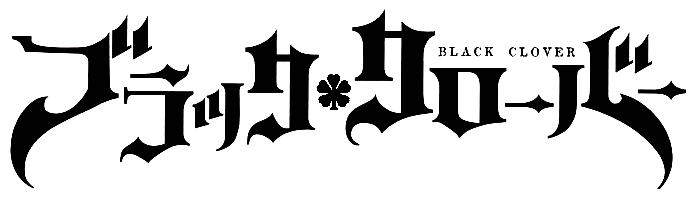

Черный Клевер


Черный клевер это аниме которое вышло в недавно, в 2017 году.
- год выхода:2017
- Автор: Тацуя Ёсихара
- издатель манги: Shueisha
- Серий: 170
Википедия: Вики
Черный клевер это аниме которое вышло в недавно, в 2017 году.
Википедия: Вики